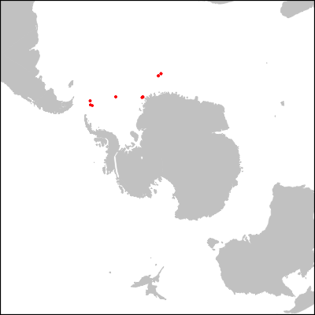

First step in mixing gplates and R to make paleogeographic maps
2020-10-15
I make a lot of paleogeographic maps, and I always do so in R. Whichever programming language you use, Gplates is an invaluable tool to achieve this. What follows is a short exampleas mentioned in the previous post I am still processing some bad news so it's all I am capable of conjuring right now of how to insert it in your workflow to map your paleodata. OK as the idea here is really just to give a first glance of the tools I will start straight ahead with converting a standard coastline map to a late Eocene base map using Seton et al. 2012 rotation model. Why? Because all you need is given with Gplates, and this is the one we have been using in Neptune.
library(rgdal)
system("gplates reconstruct -l /Applications/GPlates-1.5.0/SampleData/FeatureCollections/Coastlines/Shapefile/Seton_etal_ESR2012_Coastlines_2012.1_Polygon.shp \\
-r /Applications/GPlates-1.5.0/SampleData/FeatureCollections/Rotations/Seton_etal_ESR2012_2012.1.rot \\
-e shapefile -t 33.5 -o ~/Desktop/reconstructed")
#A lot to unpack: here I use the "feature collections" given with Gplates.
# '-l' argument is the feature to modify
# '-r' the rotation model
# '-e' the format of the output
# '-t' the desired time in Million years
# '-o' the basename of the output
# Here I have gplates on my sys.path, but you can just point at the binary file directly
coast <- readOGR("/Users/johan.renaudie/Desktop","reconstructed") #Read it in in R. For some reason, readOGR does not do tilde expansion.
Using my package NSBcompanion, grab some data in the NSB database, here, to simplify, the paleocoordinates of the sites from ODP leg 113 (though I will show in a future post how to calculate them as well using gplates CLI tool, though it is a couple of steps more complicated than this). Again, the paleogeography (as of 2020) in Neptune is based on the same rotation model mentioned above, so it is compatible.
library(NSBcompanion)
nsb <- nsbConnect("guest","arm_aber_sexy") #Connect to Neptune
exp113 <- dbGetQuery(nsb,"SELECT hole_id, paleo_latitude, paleo_longitude,rotation_source FROM neptune_paleogeography WHERE hole_id LIKE '113_%' AND reconstructed_age_ma=33.5;") #Grabs the Leg 113 paleocoordinates
dbDisconnect(nsb) #Disconnect
The next step is to transform from the standard longitude-latitude projection to something more suited to the Southern Ocean (since expedition 113 went around the Weddell Sea), here the Lambert Azimuthal Equal Area Projection.
orig_projection <- CRS("+proj=longlat")
dest_projection <- CRS("+proj=laea +lat_0=-90 +lon_0=0") #This is the proj4 string for said projection
#It is fairly straight-forward: +proj=laea means Lambert Azimuthal Equal Area Projection
# +lat_0=-90 : we take latitude -90 as the center of the projection
# +lon_0=0 : and the Greenwhich meridian is kept at the center (top).
exp113pts <- SpatialPointsDataFrame(exp113[,c("paleo_longitude","paleo_latitude")],data=exp113, proj4string=orig_projection) #Make the sites coordinates into a "Spatial-" object, that can be transformed.
polar <- spTransform(coast,dest_projection) #Transform the base map
polar_113 <- spTransform(exp113pts,dest_projection) #Transform the data pointsTo make the plot a bit cleaner, I use this dumb trick to zoom in: I create a fake parallel (here 45˚ South) and plot it first to force the plot to fit around it.
limitANT <- Lines(list(Line(cbind(-180:180,-45))),ID="a") #Make the object into a Line object (literally, a line from -180 to 180 longitude at -45 latitude)
limitANT <- SpatialLines(list(limitANT),proj4string=orig_projection) #Make the object into a SpatialLines object. Yes it is quite tedious.
limitANT <- spTransform(limitANT,dest_projection) #TransformAnd then plot everything as wanted:
png("eocene.png",h=400,w=400)
par(mar=c(0,0,0,0))
plot(limitANT,col="white")
plot(polar,col="grey80",border="grey80",add=TRUE)
plot(polar_113,col="red",pch=19,add=TRUE,cex=0.5)
box(lwd=3)
dev.off()The resulting picture: a map of the Southern Ocean at the Eocene-Oligocene boundary, highlighting the varous sites from ODP expedition 113 to the Weddell Sea.
